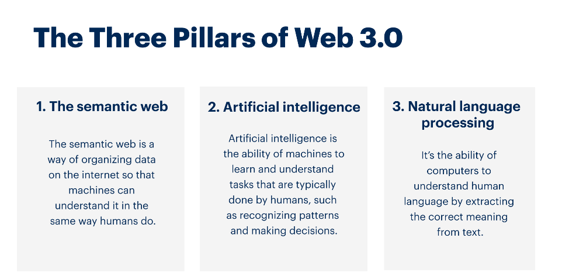
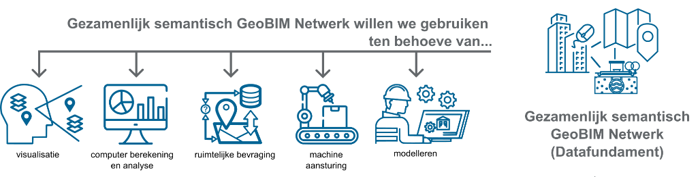
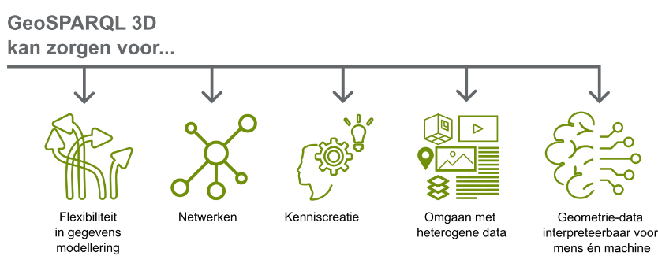
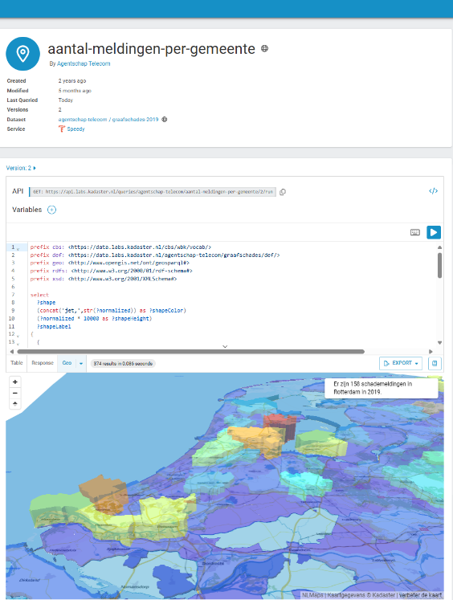
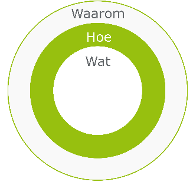
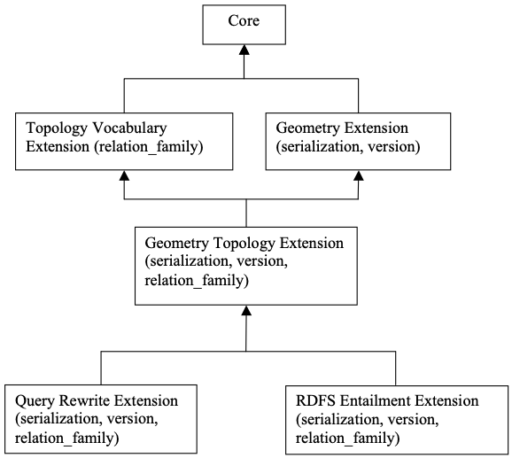
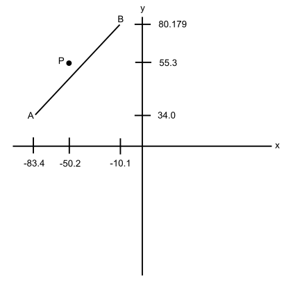
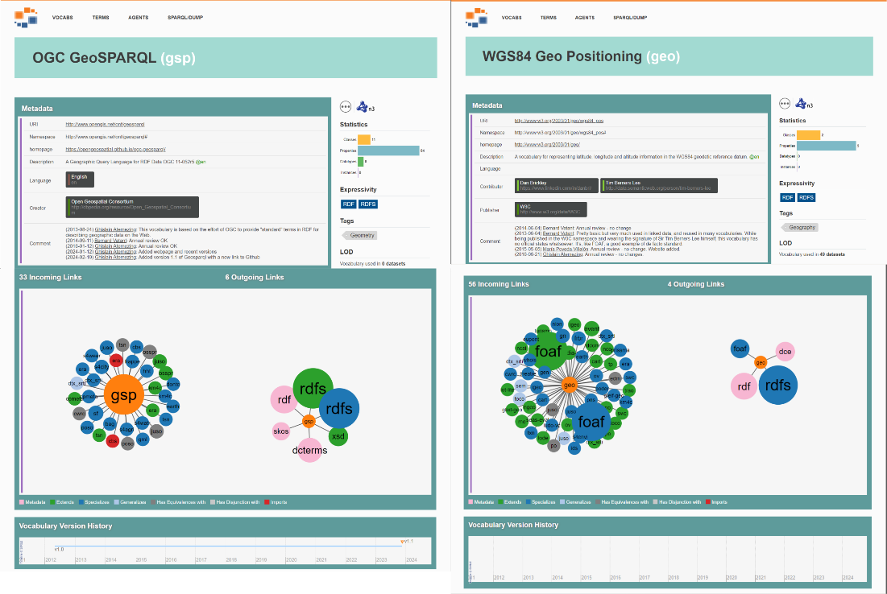
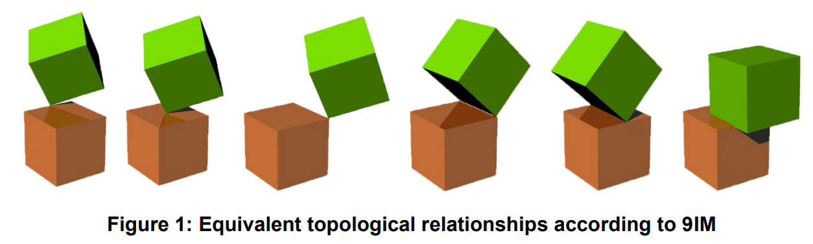

Richtingstermen worden vaak gebruikt in natuurlijk taal. Begrippen als “links”, “rechts”, “boven”, “onder”, “voor”, inclusief de kijkrichting, geven betekenis voor mensen over bepaalde ruimtelijke relaties. Ook topologische relaties als “naast”, “in”, “tussen” worden universeel begrepen. Woordenboeken voor menselijke communicatie voorzien in deze termen zodat men de mogelijkheid heeft hier effectief en beknopt over te communiceren.
Wanneer men digitale, geautomatiseerde verwerking of analyse van 3D-ruimtelijke vraagstukken wenst dient de ruimtelijke informatie worden opgesteld volgens een expliciete machine-leesbare structuur [[GB]].
OGC GeoSPARQL is een machine-leesbare Geografische Taal voor RDF-Data voor het opstellen en bevragen van geometrie in linked data. Deze taal voorziet in bepaalde functionaliteit voor het modelleren van geometrie en ruimtelijke relaties. De functionaliteit op het 3-dimensionale domein is momenteel beperkt. Het ontbreekt aan een semantische modelleeraanpak voor ruimtelijke relaties die gemakkelijk te combineren, toe te passen en op te schalen is . Wanneer deze er is ondersteunt dit bij het komen tot een digitale representatie van een digitale tweeling als een systeem bestaande uit verschillende, heterogene subsystemen.
De OGC Standards Working Group GeoSPARQL heeft het voornemen om het vocabulair door te ontwikkelen. Onderdeel van de doorontwikkeling is het toevoegen van 3D-ondersteuning aan GeoSPARQL. Als onderdeel van de request list zijn er twee issues aangemaakt, namelijk:
Extending the GeoSPARQL ontology with full-featured 3D support[1] https://github.com/opengeospatial/ogc-geosparql/issues/19
Extensding the GeoSPARQL ontology with functions to handle 3D geometrie[2] https://github.com/opengeospatial/ogc-geosparql/issues/20
Om begrip te krijgen in wat deze 3D-ondersteuning inhoudt bestaat de wens om use-cases op te stellen om de gevraagde functionaliteit te doorgronden.
Dit document beschrijft waarom de GeoSPARQL 3D-ondersteuning gewenst is, hoe hier een bijdrage aan geleverd kan worden en wat hier voor ondernomen kan worden. Tenslotte beschrijft dit document de GROTICK aspecten van de voorgestelde aanpak.
Context
GeoSPARQL is een toegevoegde waarde in bepaalde context. Zonder deze context is de behoefte aan de doorontwikkeling van GeoSPARQL minder goed te begrijpen. In dit hoofdstuk wordt Nederlandse context van GeoSPARQL uiteengezet. Daarna wordt in een volgend hoofdstuk de behoefte van GeoSPARQL beschreven.
Zicht op Nederland
Goed zicht op veranderend Nederland. Dat is nodig om het hoofd te kunnen bieden aan de maatschappelijke vraagstukken van nu en morgen. Daarom werkt men in dit programma gezamenlijk aan een fundamentele transformatie van losse basisregistraties naar een organisatie-overstijgend, multifunctioneel gegevenslandschap. Het is om allerlei redenen belangrijk om het huidige aanbod van (basis)registraties te versterken. Zodat er een sterk geo-datafundament ligt om op te bouwen.
Om datagedreven te kunnen samenwerken aan de fysieke leefomgeving werkt men in twee programma’s: Datafundament en Digitale Tweeling.
Men wil “zicht op Nederland” bieden door de ruimtelijke informatie zo te organiseren, dat deze een integraal beeld van de leefomgeving biedt. Een beeld waarover iedereen kan beschikken en waarmee je kunt in- en uitzoomen naar behoefte. En waarmee tal van aanvullende data, interpretaties en (toegepaste) modellen kunnen worden verbonden en het mogelijk maakt om voorspellingen in de tijd en consequenties van mogelijke ingrepen te simuleren. Een beeld dat zich gaat ontwikkelen in 3D en zo aansluit bij onze menselijke manier van waarnemen. Om dit te realiseren dient er een beweging te worden gemaakt van een versplinterd landschap van losstaande informatievoorzieningen per maatschappelijke (deel)opgave en organisatie (‘puntoplossingen’) naar samenwerking over gewenste ruimtelijke bewegingen en opgaven heen.
Het programma digitale tweeling streeft naar een digitale tweeling als “familie” van digitale tweelingen. Het is een stelsel die verschillende bronnen moet kunnen vergelijken en bij elkaar “op tellen”.
Figuur 1: Digitale Tweeling uit Zicht Op Nederland Bron:
Het programma Datafundament wil van losse basisregistraties naar organisatie-overstijgend multifunctioneel gegevenslandschap. Koppelbaar, flexibel uitbreidbaar met 2D en 3D mogelijkheden.
Figuur 2: Datafundament uit Zicht Op Nederland Bron:
Zicht Op Nederland spreekt van FAIR principes, een Federatief Data Stelsel (FDS) waar gegevens bij de bron via één stelsel beschikbaar komen.
Een 3D ondersteuning van GeoSPARQL kan helpen bij het behalen van deze visie.
Federatief ecosysteem voor datadelen
Een federatief ecosysteem voor datadelen stelt deelnemende partijen en gebruikers in staat om data vanuit de bron beschikbaar te stellen aan andere partijen middels datadiensten. Het federatief ecosysteem vormt samen met gemeenschappelijke voorzieningen een netwerk waarbinnen ketenpartners in staat zijn om, met de juiste autorisatie, data te delen. Hiermee krijgen ketenpartners verantwoord actueel inzicht in ruimtelijke GeoBIM data. Aangezien men in de gebouwde omgeving werkt met 2D en 3D heterogene datasets kan men de ondersteuning van 3D functionaliteit van GeoSPARQL wellicht gebruiken.
Figuur 3: Federatief ecosysteem voor datadelen
GeoBIM-Roadmap
Building Smart International en het Open Geospatial Consortium hebben gezamenlijk een roadmap ontwikkeld. Het doel van deze roadmap is om het gebruik van open GIS en BIM standaarden en integratie te bevorderen in een manier dat het de eindgebruiker helpt. De roadmap focust nadrukkelijk op de connectie tussen verschillende databronnen. Het wil de best beschikbare standaarden, tools en technieken laten gebruiken en zoeken naar hogere levels van standaardisatie en implementatie. In de roadmap staat de gebruiker centraal zodat het werk wordt gedaan naar de behoefte vanuit de data-gebruiker in de meeste gestandaardiseerde en pragmatische manier.
Werk impactvolle use-cases uit die hun voordeel halen uit verbeterde connectie tussen BIM- en GIS-data.
Voorzie in gestandaardiseerde toolkits om de use-case de daadwerkelijke applicaties mogelijk te maken.
Demonstreer de voordelen van de adoptie van open standaarden voor het modelleren van data en integratie.
Opleiden van een nieuwe generatie van data-aanbieders en -gebruikers op die zowel bedreven zijn in organisatie-omvattende BIM-GIS-gegevens en zich bewust zijn van de gebruiksscenario’s die de continuïteit van de gegevens nodig hebben.
Verbinding van de gescheiden BIM- en GIS-gemeenschappen met een gemeenschappelijk doel om een samenwerkende, geharmoniseerde en consistente aanpak van informatiemanagement binnen hun ecosystemen te bevorderen.
Ook hier is een 3D GeoSPARQL ondersteuning gewenst.
openBIM
Building Smart International heeft een visie waarin men vanaf 2025 toe wil werken naar een “reinvention” van de openBIM standaarden. Hierin schetst men een geïntegreerd proces met linked data en intelligente digitale tweeling eco systemen. Hiervoor wil men een volgende generatie data standaard gebruiken met ingebouwde modulariteit, uitbreidbaarheid en connectiviteit. Dit kan wellicht zijn invulling krijgen in het toekomstig uit te werken IFC5.
Vanuit Building Smart International is een linked-data versie van het IFC-schema uitgebracht onder de noemer van IfcOWL. Zeker het geometrie-deel in deze ontologie kan een verbetering gebruiken. Wellicht dat de doorontwikkeling van GeoSPARQL 3D een toegevoegde waarde kan zijn voor het brengen van BIM-geometry naar het web.
Figuur 5: Strategic Roadmap Building Smart International bron:
-159034681247
Evolutie van het web
Het semantisch web, soms getypeerd als web 3.0, is een uitbreiding van het World Wide Web met standaarden vanuit het World Wide Web Consortium (W3C). Het doel van het semantisch web is om het internet mens- en machine-leesbaar te krijgen.
Om dit voor elkaar te krijgen voorziet men data van semantiek, van context. Technologiën als Resource Description Framework (RDF), en Web Ontology Language (OWL) worden hier voor ingezet. Een ontology, een woordenboek, beschrijft concepten, relaties, categoriën en hoe deze zich tot elkaar verhouden. RDF data kan worden bevraagd met SPARQL, een krachtige querytaal specifiek ontworpen voor RDF. Dit stelt gebruikers in staat om complexe queries uit te voeren over de relaties en structuren binnen de gegevens. Wanneer goed ingericht geeft dit grote voordelen zoals het redeneren over data en het kunnen werken met heterogene data-bronnen.
Figuur 6: Evolutie van het World Wide Web met semantische databases en bevragingen bron:
Spatial web en Linked Building Data
Ook informatie van de gebouwde omgeving kan men opstellen volgens de principes van het semantisch web. Om ruimtelijke concepten als geometrie en topologie te kunnen duiden en bevragen heeft OGC een uitbreiding op het SPARQL vocabulair gemaakt, GeoSPARQL. Men ziet de kracht van het toevoegen ruimtelijke data aan semantisch web in. Dit wordt onder andere beschreven in een spatial web. Ook de Linked Building Data community (W3C) houdt zich hier ook mee bezig. De groep focust zich op organisaties die gebruik maken van data van de gebouwde omgeving gedurende de gehele life-cycle van het bouwwerk. Dit betreft zowel overheid als marktpartijen. De community wil ondersteunen in het opstellen van use-cases.
Het doel is om data beschikbaar te maken voor verschillende applicaties die daarmee beter in staat worden gesteld om beslissingen te maken gedurende de levenscyclus van een bouwwerk. De werkgroep organiseert samenwerkingen en workshops als “Linked Data for Architecture en Construction (LDAC).
Gartner beschrijft drie pijlers die belangrijk zijn voor het web 3.0. Allereerst is dit het semantisch web waarin zowel mens als machine begrip hebben van data. Het tweede punt is dat machines leren en begrijpen hoe werkzaamheden uit te voeren. Als derde pijler stelt Gartner de mogelijkheid voor computer om uit menselijke taal de juiste concepten te halen.
Dit geldt ook voor het ruimtelijke domein en de het 3D semantisch web.
Figuur 7: Drie pijlers van het web 3.0 Bron:
Waarom use-cases voor GeoSparql-3D

GeoSPARQL-3D is een kennismodel die men in kan zetten om te ondersteunen in een gezamenlijk semantisch GeoBIM Netwerk zoals een digitale tweeling en datafundament hiervan. In de context van de in hoofdstuk 2 beschreven ontwikkelingen is GeoSPARQL een belangrijk middel. Door dit middel te ontwikkelen en in te zetten zijn doelen op hoger niveau beter te behalen. Om de bijdrage van GeoSPARQL in perspectief te plaatsen is gekozen om zowel het gebruik en de doelen van GeoSPARQL te beschrijven als het gebruik en de doelen van een door GeoSPARQL ondersteund netwerk.
Gebruik en doel gezamenlijk semantisch GeoBIM Netwerk
In een gezamenlijk semantisch GeoBIM Netwerk wil men GEO- en BIM-informatie voor verschillende doeleinden gebruiken namelijk voor;
Visualisatie (V):
Men wil tonen hoe BIM- en GIS zich tot elkaar verhouden. Dit soort informatie gezamenlijk in een viewer gevisualiseerd krijgen. Men wil de 3D-Geo en/of 3D-BIM van een nieuw te bouwen bouwwerk in 3D-Geo en/of 3D-BIM van de bestaande digitale stad gevisualiseerd zien.
Computer berekening en analyse (CA):
Een gezamenlijk semantisch GeoBIM Netwerk kan men gebruiken voor berekening en analyse. Dashboards kunnen de resultaten van de berekeningen en analyses tonen op het GeoBIM domein. Assetmanagement (voornamelijk GIS-georiënteerd) en Projectmanagement (voornamelijk BIM-georiënteerd) kunnen hier samenkomen.
Ruimtelijke bevraging (SQ):
Het gebruik van de ruimtelijke bevraging is een belangrijk onderdeel van een gezamenlijk semantisch GeoBIM Netwerk. Vragen als: Wat voor materiaal zit er in dit gebied, waar is ruimte voor nieuwe kabels en leidingen zijn 3D-ruimtelijke bevragingen die door een optimaal werkend gezamenlijk semantisch GeoBIM Netwerk beantwoord kunnen worden.
Machine aansturing (F):
Op basis van een gezamenlijk semantisch GeoBIM Netwerk kan men machines aansturen. Het Geo-Domein kent vaak de bestaande situatie en het BIM-Domein vaak de beoogde situatie. Op basis hiervan kan men een machine aansturen.
Modelleren (M):
Ten slotte wil men aanpassing het netwerk gebruiken om aanpassingen aan de huidige situatie voor te stellen. Dit kan men doen door deze toekomstige situatie te modelleren in BIM en/of Geo. In een goed werkend 3D semantisch GeoBIM Netwerk kan mens en/of machine dit model maken.
Figuur 8: Beoogd gebruik van het een gezamenlijk semantisch GeoBIM Netwerk
Het gebruik van het gezamenlijk semantisch GeoBIM Netwerk doet men met een doel. Ruimtelijke bevragingen kunnen sneller problemen identificeren. Geo-BIM visualisatie kan zorgen voor stimulering van participatie. Computerberekeningen en analyses kan men inzetten voor betere belangenafwegingen en transparantie en controleerbaarheid van besluitvorming. Machine-aansturing en het door mens en machine modelleren kan leiden tot efficiëntere dienstverlening.
Figuur 9: Doelen van het gebruik van een gezamenlijk semantisch GeoBIM Netwerk
Gebruik en doel GeoSPARQL-3D
Doel en gebruik als beschreven in paragraaf 3.1 gelden voor een gezamenlijk semantisch GeoBIM Netwerk. GeoSPARQL kan hier een belangrijke bijdrage aan leveren. Wanneer men federatief bevragingen van heterogene ruimtelijke data bij de bron wil uitvoeren is voor het duiden van het 3D-object en de 3d-functie, vocabulair nodig. Het moet voor mens en machine helder zijn wat men bedoelt met een vraag als “Raakt de 3D-geometrie van de ontworpen constructie de 3D-geometrie van de bestaande asset van een andere partij?”. Het moet dan niet uitmaken of deze data in GIS- of BIM-standaard aangeboden wordt. GeoSPARQL-3D kan men gebruiken voor:
Genereren 3D-geometrie voor mens en machine:
Voor het handmatig of machinaal opstellen van 3D-geometrie in BIM of GEO wil men de GeoSPARQL-standaard gebruiken. Het vocabulair dient 3D-geometrie te ondersteunen. Een 3D-kubus kan men op meerdere manieren duiden. De beschrijving van de begrenzende punten, lijnen en vlakken, een grondvlak met een “extrude” of de functie kubus als ruimtefiguur zijn mogelijke benaderingen. Wanneer GeoSPARQL mogelijkheden biedt voor het opstellen van 3D geometrie kunnen mens en machine hier mee werken.
Duiden van 3D relatie geometrie voor mens en machine:
Bevindt “3D-geometrie A” zich “in” “3D-geometrie B”? Of “raakt”, “overlapt” of “doorkruist” deze in 3D? Men wil deze topologische relaties gebruiken en beschrijven om ruimtelijke analyses te kunnen doen, regels te kunnen stellen of kennis af te leiden.
3D ruimtelijke bevraging voor mens en machine:
In plaats van het duiden van de topologische geometrische relaties in 3D, wil men deze ook bevragen. Welke relatie zit er tussen “3D-geometrie A” en “3D-geometrie B”? dan dient er de juiste topologische relatie uit te komen. Dit kan men bijvoorbeeld gebruiken voor clash-detecties.
Afleiding geometrische en topologische kennis:
Op basis van expliciet gemodelleerde geometrische en topologische data wil men ook informatie afleiden. Op basis van expliciet gemodelleerde data kan men impliciet kennis toevoegen. Wanneer “3D-geometrie A” “in” “3D-geometrie B” zit dan kan men afleiden dat de relatie “overlapt” en “raakt niet” niet gelden, ondanks dat dit niet gemodelleerd is. Ook wil men vragen kunnen stellen als “heeft deze boom 3D-geometrie?”. Wanneer een boom een multisolid-geometrie heeft dient kan het antwoord “ja” zijn, terwijl dit niet expliciet gemodelleerd is.
Duiden meervoudige geometrie voor mens en machine:
Ten slotte wil men GeoSPARQL gebruiken om meerdere vormen van geometrie aan één feature te koppelen. Een boom in de werkelijkheid kan in de database zowel een 3D als een 2D geometrie bevatten. De boom met al de eigenschappen hoeft dan niet dubbel in de database te staan, één keer 2D en één keer 3D.
Figuur 10: Beoogd gebruik van GeoSPARQL 3D
Het gebruik van GeoSPARQL doet men ook met een doel. Het op basis van semantiek modelleren en bevragen van geometrie levert voordelen op.
Heterogene Data: Met GeoSPARQL-data, Linked Data, is het mogelijk om een grote hoeveelheid en verscheidenheid aan heterogene data met elkaar in verband te brengen. Daarbij maakt het niet uit of het nu kaartmateriaal is, illustraties, informatie op een webpagina, of gegevens uit een database.
Aanvullend hierop heeft het opstellen van geometrie in linked-data een aantal voordelen zoals beschreven door OGC:
Flexibiliteit in gegevensmodellering : Data volgens het GeoSPARQL, maakt gebruik van een graafgebaseerd datamodel, wat zeer flexibel is. Het stelt men in staat om complexe relaties en gegevensstructuren op een natuurlijke en intuïtieve manier te modelleren.
Interoperabiliteit: RDF is een standaard van het World Wide Web Consortium (W3C) en wordt breed ondersteund, wat zorgt voor een hoge mate van interoperabiliteit tussen verschillende systemen en applicaties. Dit maakt het mogelijk om gegevens uit verschillende bronnen samen te voegen en te integreren. Dit sluit aan op het omgaan met heterogene data.
Netwerken: Omdat veel organisaties en projecten RDF gebruiken voor hun data, ontstaat er een netwerkeffect waarbij de waarde en bruikbaarheid van RDF-data toe kan nemen naarmate meer gegevensbronnen RDF gebruiken en koppelen.
Kenniscreatie: Het maakt het mogelijk om betekenis (semantiek) aan gegevens toe te voegen door middel van ontologieën en vocabularia. Dit bevordert de ontdekking, hergebruik en integratie van gegevens op een semantisch rijke manier
Interpreteerbaar voor mens en machine: Ten slotte zorgt GeoSPARQL 3D voor het interpreteerbaar maken van 3D-geometrie voor mens en machine. Doordat mens en machine de data op een juiste manier interpreteert kan mens en machine taken met deze data sneller uitvoeren.
Figuur 11: Doelen van het gebruik van GeoSPARQL 3D
De doelen en het gebruik van GeoSPARQL 3D dragen bij aan het gebruik en de doelen van een gezamenlijk semantisch GeoBIM Netwerk. Dit netwerk is ook geen doel aan zich. Dit realiseert men om de leefomgeving in Nederland te verbeteren. Op basis hiervan kan men onderstaande doelenboom schetsen.
Figuur 12: Doelenboom GeoSPARQL 3D
GeoSPARQL faciliteert op dit moment 2D geometrie en 2D ruimtelijke bevragingen. In de GEOBIM context is een uitbreiding naar 3D gewenst. Door voor het GeoSPARQLvocabulair use-cases op te stellen hoopt Geonovum dat toekomstig GeoSparql een instrument kan zijn dat voorziet in het vocabulair om de use-cases in de toekomst mogelijk te maken. Dit kan een grote bijdrage bieden aan een gezamenlijk semantisch GeoBIM Netwerk. Zowel in proprietary software als open source software en met linked (open) data in het semantisch web. Op die manier kan GeoSPARQL 3D indirect bijdragen aan een verbeterde leefomgeving.
Ruimtelijke vragen aan heterogene datasets
In een federatief ecosysteem wil men ruimtelijke 3D vragen kunnen stellen aan de verschillende ontsloten, heterogene, datasets als:
Als projectmanager wil ik weten of de ontworpen 3D-constructie bestaande 3D-assets van een andere partij raakt
Als beleidsmedewerker wil ik weten of er een 3D-zichtlijn is tussen de 3D-woning en drie 3D- bomen
Als materiaalleverancier wil ik weten welke materialen en producten er in een bepaald 3D-gebied aanwezig zijn.
Als netbeheerder wil ik weten op welke 3D-afstand van mijn 3D-gasleiding het door het ingenieursbureau gemodelleerde 3D-riool ligt.
Als bewoner ben ik benieuwd of ik de toekomstige 3D-toren van de projectontwikkelaar vanuit mijn 3D-woning kan zien.
Als politiek bestuurder wil ik in 3D gevisualiseerd zien wat een omgevingsplan definieert en wat voor soort effect dit qua bouwopties oplevert. Hoeveel ruimte voor bouwen is er nog?
Als …
Op dit soort vragen hoopt men een zinnig en betekenisvol antwoord van een machine of mens over terug krijgen. De hierboven weergegeven voorbeeld userstories zijn geschreven vanuit het oogpunt dat dit stakeholders zijn die niet in bezit zijn van professionele software en vanuit het oogpunt van stakeholders in bezit van propriëtaire software die de data willen combineren met ander soort datasets. Voor de use-cases zijn er verschillende (BIM-GEO) databronnen nodig om de vraag van de stakeholder op te lossen. De stakeholder heeft de behoefte voor het stellen van ruimtelijke vragen en op het krijgen van een gebruiksvriendelijk (ruimtelijk) antwoord/inzicht.
Het kadaster geeft met behulp van datastories inzicht in het mogelijk huidig gebruik van GeoSPARQL voor het bevragen van heterogene dataset via het web. Graafschades vanuit de dataset van het agentschap-telecom combineert men met de dataset van CBS Wijk- en buurtkaart 2019. Met GeoSPARQL functionaliteit kan men onderstaande visualisatie maken op basis van heterogene datasets.
Figuur 13: Datastory over analyse schraafschades per gemeente m.b.v. GeoSPARQL van het kadaster bron:
Conversie en integratie
Het is mogelijk om heterogene data te converteren zodat dit homogene data wordt. Op het vlak van GEO en BIM zijn er bijvoorbeeld IFC naar CityGML(CityJSON encoding) converters. Deze converters vergemakkelijken de data-overdracht en verhogen daarmee de herbruikbaarheid van data. Standaarden voor juiste positionering, georeferentie, van BIM-modellen in een GEO-omgeving zijn in ontwikkeling . Landelijk vormt men hier afspraken over in het DSGO. Het BIM-bewust opstellen van GEO-informatie of GEO-bewust opstellen van BIM-informatie is randvoorwaardelijk voor goede conversie van BIM naar GEO of vice versa. Na het doen van een conversie kan men in een GEO of BIM- omgeving de GEO- of BIM-functionaliteit gebruiken. De standaarden en techniek voor conversie lijkt voorhanden en de haalbaarheid op korte termijn daarmee realistisch mede door de inspanning van de TU Delft 3D geoinformation[3] https://3d.bk.tudelft.nl/projects/chek/ .
Wanneer men eenmaal een heterogene dataset heeft kan men de functionaliteit van GIS- of BIM-software gebruiken om ruimtelijke bevragingen te doen.
Figuur 14: Ruimtelijke bevraging in GIS-software QGIS bron: Figuur 15: Ruimtelijke bevraging (Clash detectie) in BIM sofware, autodesk Navisworks bron:
Bij integratie wordt de conversie-stap van GEO- naar BIM- niet gedaan maar blijft de data bij de bron in het oorspronkelijke BIM- of GEO-(geometrie)formaat. Een deel van de geometrie van BIM en GEO dient door het query-vocabulair, GeoSPARQL, bekend te zijn zodat zinnig antwoord op ruimtelijke vragen gegeven kan worden.
De GEO-BIM integratie, en het toewerken naar een federatieve stelsel, kan men via het web behalen. Geo-informatie is in bepaalde mate al naar het web gebracht met OGC-services als bijvoorbeeld WMS, WFS en de OGC API’s. Men zoekt naar een juist formaat om ook BIM-informatie naar het web te brengen en te integreren. Er is onderzoek gaande naar IfcOWL, JSON-LD en RDF-Literals voor het semantisch registreren van geometrie-data uit BIM. Daarnaast zijn GeoSPARQL , JSON-FG (https://www.geonovum.nl/uploads/documents/220405-JSON-FG.pdf) en de door OGC in ontwikkeling zijnde OGC Building Blocks elementen die de integratie zouden kunnen ondersteunen.
Wanneer men zowel BIM als GEO via het web zou kunnen verservicen en kunnen bevragen met ruimtelijke queries uit het GeoSPARQLVocabulair kan dit een enorme meerwaarde zijn voor toepassingen op het GEO-BIM domein.
Hoe
GAP-Analyse
De GeoSPARQL standaard wordt doorontwikkeld door de Standards Working Group van OGC. Zonder inspanning vanuit Geonovum zal de functionaliteit van GeoSPARQL ook toenemen. De toekomstige functionaliteit zal zeer waarschijnlijk niet overeenkomen met de gewenste ontwikkeling vanuit het netwerk van Geonovum. Door deze gewenste ontwikkeling kenbaar te maken bestaat de kans dat de toekomstige ontwikkeling van GeoSPARQL dichter bij de gewenste ontwikkeling in de buurt komt dan zonder dit te doen. Het kenbaar maken van een gewenste ontwikkeling kan men doen door deze kenbaar te maken middels User-Stories. De user-stories die een toevoeging vragen bovenop de huidige functionaliteit van de standaard zijn hier interessant. Het is daarom van belang de huidige functionaliteit van GeoSPARQL goed te kennen.
Figuur 16: Verwacht verschil in ontwikkeling standaard door aandragen use-cases
Functionaliteit van GeoSPARQL 1.1
Om goede use-cases aan te kunnen dragen is het van belang te begrijpen wat de functionaliteit van GeoSPARQL is. Dit wordt in hoofdlijnen in deze paragraaf beschreven.
GeoSPARQL versie 1.1 bestaat uit een Core-module, een Topology-vocabulair extensie, een Geometry extensie, een geometry topology etensie, een RDFS entailment extensie en een query rewrite extensie.
Figuur 17: Modules van de GeoSPARQL standaard bron:
De modules zullen hieronder kort toegelicht worden.
GeoSPARQL CORE-module
GeoSparql versie 1.1 bestaat uit een CORE module. Deze voorziet in de klassen en definities van Spatial Object en Feature. Daarnaast specificeert de module de containers Spatial Object Collection en Feature Collection.
De properties: hasSize, hasMetricSize, hasLength, hasMetricLength, hasPerimeterLength, hasMetricPerimeterLength, hasArea, hasMetricArea, hasVolume, hasMetricVolume worden toegekend aan SpatialObject
de properties: hasGeometry, hasDefaultGeometry, hasBoundingBox en hasCentroid worden toegekend aan Feature.
GeoSPARQL Topology vocabulair extensie
Daarnaast bestaat het uit een uitbreiding, een TopologyVocabulair.
Dit vocabulair bestaat uit standaarddefinities voor relaties die tussen een Spatial Object en een ander spatial object kan bestaan. Om de relatie te duiden kan gebruik gemaakt worden van de sf-spatial-relations, de Egenhofer topologische relatie en de RCC8 relatie.
GeoSPARQL vormt men logica over ruimtelijke relatie basis van onderstaande aspecten:
Geometrie A heeft een binnen (A), een grens (A) en een buiten (A)
Geometrie B heeft een binnen (B), een grens (B) en een buiten (B)
Op basis hiervan kan men 9 relaties duiden die waar kunnen zijn in (0, 1 of 2 dimensies) of onwaar kunnen zijn (-1):
A binnen (A) raakt () B binnen (B)
A binnen (A) raakt () B grens (B)
A binnen (A) raakt () B buiten (B)
A grens (A) raakt () B binnen (B)
A grens (A) raakt () B grens (B)
A grens (A) raakt () B buiten (B)
A buiten (A) raakt () B binnen (B)
A buiten (A) raakt () B grens (B)
A buiten (A) raakt () B buiten (B)
Wanneer de uitkomst 0, 1 of 2 dimensionaal is stelt men dat het waar is (TRUE (T)) bij de uitkomst 01 stelt men dat het niet waar is (FALSE (F)). Een aantal te vormen combinaties leidt tot situaties die in de werkelijkheid niet voor kunnen komen.
Figuur 18: DE-9IM model Topologisch model om de ruimtelijke relatie te beschrijven tussen twee geometrieën
De relatie die geometrie A en B in Figuur 21 tot elkaar hebben kan men omschrijven met behulp van een matrix. Binnen GeoSPARQL wordt dit geduid door de matrix per rij van links naar rechts te noteren, bijvoorbeeld als (TTTTTTTT).
Het definiëren en bevragen van topologische relatie is aanwezig in query-talen. Database-Management-Systemen met ruimtelijke ondersteuning maken gebruik van deze query taal. Standaard topologische benamingen voor deze relaties kunnen hierbij gebruikt worden. Bijvoorbeeld volgens de OGC Simple Feature Topologische relaties:
geometrie A is hetzelfde als geometrie B (Equals)(TFFFTFFFT)
geometrie A raakt geometrie B niet (Disjoint) (FF*FF****)
geometrie A raakt geometrie B wel (Intersects) (T******** of *T******** of ***T***** of ****T****)
geometrie A raakt geometrie B maar overlapt niet (Touches) (FT******* of F**T***** of F***T****)
geometrie A kruist geometrie B maar overlapt niet (Crosses) (T*T***T** voor Punt-Lijn, Punt-vlak, Lijn-vlak, 0*T***T** voor Lijn-Lijn)
geometrie A is in geometrie B (Within) (T*F**F***)
geometrie A bevat geometrie B (Contains) (T*****FF*)
geometrie A overlapt met geometrie B (Overlaps) (T*T***T** voor vlak-vlak punt-punt, 1*T***T** voor Lijn-Lijn)
Waar een * staat maakt de TRUE of FALSE niet uit om de topologische relatie te bezitten. Waar een 0, 1 of 2 staat geldt het alleen voor de 0, 1 of 2 dimensionale relatie.
GeoSPARQL voorziet in de RCC8, Egenhofer en Simple Features topologische relaties. Tussen deze standaarden zit enig verschil in de betekenis van topologische relaties. Bijvoorbeeld: Egenhofer en RCC maken onderscheid in “coveredBy” of “TPP” en “inside” of “NTPP” terwijl dit met OGC Simple features beide de relatie “inside” is.
Figuur 19: Overzihtt Egenhofer, RCC-8 en OGC topologische relaties, overeenkomsten en verschillen bron:
GeoSPARQL Geometry extensie
Een andere uitbreiding van de geosparql standaard is de Geometry uitbreiding.
Dit vocabulair voorziet in de klasse Geometry en GeometryCollection, een aantal rdfs datatypes en gestandaardiseerde functies om geometrie naar een bepaalde encoding te vertalen.
De geometrie extensie voorziet in de mogelijk om geometry te duiden in de GeoSPARQL standaard. Ondersteund formaat voor de geometrie is een rdfliteral in wkt, gml, geojson en kml.
Geosparql is gebaseerd op de ISO/OGC Simple Features Access – Common Architecture (SFA-CA). Ook binnen Nederlandse geo-standaarden geldt Simple Feature Profiel (SF-0, -1, -2) als uitgangspunt. Ondanks dat de GeoSparql ontology zich baseert op de simple features kan dit niet bij elke geometrie serialisatie worden toegepast. Zo ondersteunen geojson en kml niet in Triangulated Integrated Network (TIN) of in Triangle geometrie.
Figuur 20: Geometrie Klassen Hierarchy van het Simple Feature ondersteund in GeoSPARQL Bron:
Geosparql en simple features ondersteunen geen 3D geometrie. Er mag een z-coordinaat aan punten van geometrie worden meegegeven en ook een lijn of vlak mag één z-waarde bevatten die gezien wordt als 2,5D geometrie. De z-waarde zal in calculaties geprojecteerd worden op Z=0 level.
Figuur 21: Verschil 2D, 2,5D en 3D geometrie
Om goed gebruik te kunnen maken van geometrische data is het van belang dat de units of measure bekend zijn. Dit kan men doen door een Spatial Reference System (SRS) te associëren aan de geometrie en concepten uit de QUDT ontologie. Ook is het mogelijk om naar een bepaald Discrete Global Grid System te verwijzen.
De geometry-extensie voorziet tenslotte uit een aantal standaard niet topologische bevragingen/functionaliteiten zoals geof:area waarmee het oppervlak van een geometrie wordt teruggegeven en ruimtelijke aggregatiefuncties zoals geof:aggCentroid waarmee het centerpunt wordt berekend van meerder geometriën.
GeoSPARQL Geometry topology
Een andere extensie is de geometrytopologyextensie. Deze voorziet in query-functies die relaties tussen verschillende geometrieën teruggeven. Wanneer geometrie1 en geometrie2 een relatie hebben als “disjoint” geeft de functie een boolean “TRUE” terug als deze geof:sfDisJoint(geometrie 1, geometrie 2) analyseert.
Het is mogelijk om op bepaalde topologische relaties te bevragen:
geof:sfEquals = simple feature equals
geof:ehEquals = Egenhofer equals
geo:rccEquals = RCC8 equals
RDFS Entailment extension
De RDFS redenerings extensie voorziet in regels voor het redeneren van geometrie. Op basis van bepaalde statements kan men andere informatie afleiden, redeneren.
Op basis hiervan kan men afleiden dat “book2” van het “type” “publication” is aangezien zijn “type” “Article” hier een “subClassOf” van is. Ook kan men afleiden dat “book3” van het “type” “publication” is omdat de relatie “publishes” in de range van “publication” ligt.
Dit soort logica voor afleiding kan men ook stellen voor geometrie. Geosparql stelt logica voor simple features geometrie (Figuur 23).
Query Rewrite Extensie
GeoSPARQL maakt mogelijk dat men met het vocabulair kan bevragen of “Feature A” in “Feature B” ligt. Bijvoorbeeld onderstaande query waarin gezocht wordt welke waterlichamen “:Waterbody” in “rcc8Within” New Hampshire “:NH” liggen zal bij een GeoSPARQL compliant tool het juiste resultaat geven.
Figuur 23: OGC GeoSPARQL Query Rewrite Extensie voorbeeld query bron:
Wanneer men goed naar de bovenstaande query kijkt zal men opmerken dat de gevraagde query eigenlijk dient te kijken naar de geomLiteral van “Waterbody” en de geomLiteral van New Hampshire om resultaat te krijgen. Eigenlijk wordt onderstaande query gevraagd.
De Query Rewrite Extensie specificeert een RIF-rule die het herschrijven van de query mogelijk maakt.
Totaal schema GeoSPARQL
Wanneer men de verschillende modules gebruikt kan men onderstaand model maken. Waarin men het concept Spatial Object met subklasse feature en subklasse geometrie heeft. Een geometrie kan de geometrie van een feature zijn. Geometrie wordt beschreven met een geomLiteral. Een spatial object kan een topologische relatie naar een Spatial Object hebben. Spatial objects, Geometriën en Features kunnen member worden gemaakt van een collectie. In de standaard staan meer klassen en relaties dan in het schema getoond. Wel geeft dit een overzicht van de belangrijkste klassen en relaties.
Figuur 25: Overzicht van de klassen en relaties gedefinieerd door GeoSPARQL bron:
Requestlist voor GeoSPARQL
Voor de doorontwikkeling van GeoSPARQL bestaat er een requestlist[4] http://ogc.standardstracker.org/requestlist.cgi?component=11-052r4&list_id=1094&product=OGC
. Hierop vindt men het request “Extending the GeoSPARQL ontology with full-featured 3D support“. In de OGC White Paper “OGC Benefits of Representing Spatial Data Using Semantic and Graph Technologies” splitst dit uit in twee aspecten. Enerzijds het kunnen duiden van 3D geometrie, anderzijds het toevoegen van functies van 3D geometrie.
Implementatie van GeoSPARQL
Implementatie in software
Er zijn verschillende triple stores die de GeoSPARQL standaard implementeren. Figuur 29 toont een niet limitatief overzicht van software die de standaard implementeren.
Figuur 26: Overzicht software met GeoSPARQL implementatie
In een onderzoek .is in beeld gebracht in hoeverre de software voldoet aan de specificaties gesteld in de huidige GeoSPARQL-standaard. Uit dit onderzoekt blijkt dat geen van de software die GeoSPARQL-standaard stelt te ondersteunen volledig voldoet aan de vereisten van de standaard.
Figuur 27: Overzicht van de GeoSPARQL compliancy en de ondersteuning van de verschillende modules in verschillende software bron: .
Het uitbreiden van de huidige functionaliteit van GeoSPARQL kan erin resulteren dat de standaard en de software qua compliancy nog verder uit elkaar komen te staan.
Implementatie in linked-open-vocabulaires
GeoSPARQL is naast software ook geïmplementeerd in ander vocabulair. De standaard heeft relaties naar en/of is geïmplementeerd in deze andere standaard vocabulaires. De website Linked Open Vocabularies toont een overzicht van de woordenboeken die een relatie hebben met GeoSPARQL. Ten tijde van het schrijven (juli ’24) zijn er 33 woordenboeken die naar GeoSPARQL verwijzen. Hieronder zijn nederlandse woordenboeken als de bag en cbs, een Europees woordenboek zoals European Union Agency for Railways (era), de woordenboeken simple features (sf) en gml (gml) van OGC, een woordenboek voor adressen en features (juso) een ruimtelijke relatie woordenboek van het ordnance survey (osspr), en een positionering woordenboek Positioning systems (poso).
Het woordenboek voor WGS84 Geo Positionering (geo) van W3C lijkt beter ingebed in het netwerk van vocabulair. Het heeft een relatie naar 56 woordenboeken waaronder naar het woordenboek “foaf” dat veelvuldig gebruikt wordt in het semantisch web en ook het woordenboek geonames (gn) linkt hiernaar.
Figuur 28: Inkomende en uitgaande links vanuit GeoSPARQL en Geo Positioning bron:
Om een nog betere integratie van de GeoSPARQL standaard te krijgen zou het goed zijn als meer woordenboeken een relatie naar het geosparql vocabulair (gsp) zouden leggen. Daarnaast is uitbreiding naar grote woordenboeken als “schema” of “time” gewenst. Het schema woordenboek (schema) heeft momenteel een link naar de ontology for managing geometry (omg), maar niet naar GeoSPARQL.
Figuur 29: Overzicht van Linked Open Vocabulaires. Hoe groter de cirkel van het woordenboek, hoe meer links dit woordboek heeft. GeoSPARQL (gsp) positioneert zich hierin. bron:
In de geosparql 1.1 specificatie wordt de relatie naar andere woordenboeken geduid:
De links naar onderstaand vocabulair wordt voorgesteld:
- ISA Programme Location Core Vocabulary (LOCN)
- WGS84 Geo Positioning: an RDF vocabulary (POS)
- W3C Activity Streams Vocabulary
- Geonames ontology (gn)
- NeoGeo Vocabulary (ngeo)
- Juso Ontology (juso)
- Time Ontology in OWL (time)
- Schema.org (schema)
- Semantic Sensor Network Ontology (SSN)
- DCMI Metadata Terms (DCTERMS)
- The Pronvenance Ontology (PROV)
- Wikidata (
- Openstreetmaps ontology
- Ordnance Survey UK Spatial Ontology (osspr)
- CIDOC CRM Geo
- Basic Formal Ontology (BFO)
Deze relaties zijn alleen in de specificatie beschreven en zijn niet terug te vinden in de ontologie van GeoSPARQL dan wel in het vocabulair waar naar gerefereerd wordt. Op het overzicht dat men verkrijgt op Linked Open Vocabularies is dit daarom ook niet terug te zien. Dit onderdeel van de GeoSPARQL standaard is informatief van aard en kan optioneel gebruikt worden wanneer men met de standaard werkt.
Berekening in de software
Wanneer men een GeoSPARQL query uitvoert dient tooling die compliant is met de GeoSPARQL-standaard met behulp van een engine een berekening te doen waarmee het juiste resultaat getoont kan worden.
Als voorbeeld: Is de relatie “touch” te leggen tussen punt P en lijn AB?
Ligt punt P op lijn AB? Dan moet het coördinaat van het punt passen in de functie van de lijn.
Dit is niet het geval, dus nee, punt P ligt niet op de lijn AB. Op basis van deze berekening kan men stellen dat punt P en lijn AB de topologische relatie “Disjoint” hebben. Dit is een simpel voorbeeld berekening die in tooling ingebouwd kan worden om GeoSPARQL functionaliteit te bieden.
Figuur 31: visualisatie van topologische relaties tussen punt en lijn bron:
Gewenste functionaliteit GeoSPARQL
Toevoegen van het opstellen van geometrie
Op dit moment kent GeoSPARQL een aantal geometrieën zoals getoond in figuur Figuur 23Figuur 23Figuur 23Figuur 23Figuur 23Figuur 23. IFC (schema 4x3) definieert een 15-tal geometrie-types, 75 geometrie-entities en 27 geometrie-functies. Dit aantal groeit in de IFC-standaard door de behoefte om ook assets met complexe geometriën (bruggen, tunnels en (spoor-)wegen) op deze manier uit te gaan wisselen en de wens van BuildingSmart om dit te faciliteren.
Figuur 32: Fragment van de taxonomie van geometrie vanuit het IFC schema 4x3 bron:
In hoofdlijn stelt IFC met behulp van bovenstaande geometrie-typen 3D-geometrie op drie manieren op: volgens Boundary Representation, Constructive Solid Geometry en volgens Sweep Volume.
Figuur 33: Manieren van opstellen van 3D-geometrie in IFC bron:
De Boundary Representation methode beschrijft een 3D-volume door de geometrie die het 3D volume begrenst. Dit komt sterk overeen met de manier waarop de Geo-standaarden voor geometrie ook werken. De IFC-geometrie waarmee men een 3D-boundary representation kan maken kent geometrie-typen die in de Geo-standaarden niet ondersteund worden.
Figuur 34: Advanced BRep in IFC gebruik makend van NURBS-curves voor de definitie van de boundary surfaces. bron:
Daarnaast kent IFC de methode om op basis van 3D-primitieven en boolean operations tot de juiste 3D-vorm te komen. IFC 4x3 kent onderstaande primitieven:
Figuur 35: Ifc3DPrimitives
Deze primitieven kan men samenvoegen, de overlappende delen behouden of de verschillen behouden.
Figuur 36: IfcBooleanOperators
3D primitieven met Union, Intersection en Difference kunnen resulteren in complexe geometrie die met een Boundary representation methode veel meer data kost om dezelfde vormen te beschrijven.
Figuur 37:Constructive Solid Geometry met 3D primitieven en Boolean Operators bron:
Tenslotte kent IFC een Sweep Volume om 3D geometrie te duiden. Met deze methodiek definieert men een vlak die men over een bepaald pad kan extruderen.
Toevoegen van het opstellen van topologie
In 3D zijn de hoeveelheid mogelijke ruimtelijke relaties groter dan in 2D. Zie bijlage 1 en . Wellicht kan men als eerste stap voor het opstellen van 3D topologische relaties gebruik maken van de al bestaande DE-9IM benadering.
Figuur 38: Topologisch model om de ruimtelijke relatie te beschrijven tussen twee geometrieën (2 solids in 3D)
Wanneer men de topologische relatie gebruikt als DE-9IM voor 3D en stelt dat “3D-geometrie A”, “3D-geometrie B” raakt, “Touches” (DE-9IM Intersection Pattern (FFTFTTTT)), zou dit in 3D gelden voor elk van de onderstaande situaties.
Figuur 39: Topologische relaties “Raakt” volgens DE-9IM ingezet voor 3D-geometrie bron:
De vraag is of de topologische relatie specifieker geduid moet kunnen worden zodat de situaties zoals in Figuur 44 met verschillende topologische relaties beschreven kunnen worden.
Door het toevoegen van de 3D-component krijgt men andere topologische relaties maar ook meer geometrie-combinaties die een topologische relatie tot elkaar kunnen hebben. Momenteel voorziet de GeoSPARQL standaard in 2D-Punt- 2D-Lijn- en 2D-Vlak geometrie. De topologische relatie die een 3D-solid t.o.v. een 3D-punt kan hebben is geen onderdeel van de standaard.
3D-Punt
3D-Lijn
3D-Vlak
3D-Solid
3D-Punt
3D-Punt
-
3D-Punt
3D-Punt
-
3D-Lijn
3D-Punt
-
3D-Vlak
3D-Punt
-
3D-Solid
3D-Lijn
3D-Lijn
-
3D-Punt
3D-Lijn
-
3D-Lijn
3D-Lijn
-
3D-Vlak
3D-Lijn
-
3D-Solid
3D-Vlak
3D-Vlak
-
3D-Punt
3D-Vlak
-
3D-Lijn
3D-Vlak
-
3D-Vlak
3D-Vlak
-
3D-Solid
3D-Solid
3D-Solid
-
3D-Punt
3D-Solid
-
3D-Lijn
3D-Solid
-
3D-Vlak
3D-Solid
-
3D-Solid
Het toevoegen van deze functionaliteit kan leiden tot andere conclusies op geometrische vragen dan dat GeoSPARQL op dit moment kan geven. Op basis van 2D geometrie kunnen bepaalde vormen elkaar raken wat in 3D niet het geval hoeft te zijn:
Topologie ontologie:
The SUMO ontology also contains definitions for key terms like SUMO:Above, SUMO:Below, SUMO:Near, SUMO:Left, and SUMO:Right. However, the definitions made in SUMO are intentionally not aligned with the proposed concept directly because of their specificity. SUMO definitions all involve overlapping projections, which could potentially contradict statements about other positioning directions. This finding is consistent with the analysis of Bateman and Farrar, who argue that DOLCE Ultralight ontology (DUL) may be a better upper ontology for ontologies describing concepts of spatiality due to its more open descriptions. Consequently, we propose aligning the ontology implementing the concept with DUL in Section 4.3.
Er zijn een aantal use-cases opgesteld, deze willen we verder uitbreiden met het netwerk.
De vorm, voorgesteld door de SWG is:
Describing a use case you would like tosolvewithGeoSPARQLthat you currentlycannot
Describehow you solveitwith your work
Describehow you thinkitcouldbeincorporated in thecurrentversion of GeoSPARQL
Uit zicht op Nederland:
Lokale bestuurders hebben behoefte aan inzicht in
energiegebruik, isolatiewaarde en bouwkundige
kenmerken van gebouwen in hun gemeente uit
publieke en private bronnen, zodat zij kunnen sturen
op de energietransitie in hun gemeente.
Uitvoerders van infrastructuurprojecten hebben
gecombineerde informatie nodig over ondergrondse
kabels, leidingen, bodemgesteldheid en verkeersstromen
om de bouwplanning te optimaliseren,
graafschade te voorkomen en de veiligheid van het
publiek te waarborgen.
Wat

Om de interoperabiliteit, ruimtelijke bevragingen, schaalbaarheid en semantische integratie voor Geo-BIM op het domein van geometrie te verbeteren wil Geonovum een bijdrage leveren aan de doorontwikkeling van GeoSPARQL. De focus van de bijdrage zal liggen op de ondersteuning van het opstellen van 3D-geometrie en de ondersteuning van functies voor het uitvoeren van 3D ruimtelijke bevragingen. Hiervoor zijn twee fases beoogt.
Fase 1: User stories
We gaan use-cases opstellen met het netwerk
Inventariseren stakeholders
Benaderen stakeholders
Open uitnodiging stakeholders
Opstellen user-stories
Fase 2: Onderzoeksproject
In de tweede fase kan de GeoSPARQL-ontwikkeling eventueel als onderzoeksproject uitgevoerd worden. Bijvoorbeeld in het DMI-project. Activiteiten die hier in vallen zijn bijvoorbeeld:
Governance
Vinden eigenaar
Opstellen projectplan
Onderzoek en analyse
Marktonderzoek
Gap Analysis
Hiaten in bestaande standaarden en technologieën
Technische specificaties/handreiking
Documenteren van de specificaties/toepassingsprofielen inclusief definites, protocollen en procedures
Prototyping en testen
Ontwikkelen van prototype en pilot om de haalbaarheid en effectiviteit van de standaard te evalueren.
Uitvoeren van tests en validaties om te onderzoeken of het prototype voldoet aan de gedefinieerder vereisten en prestatiespecificaties.